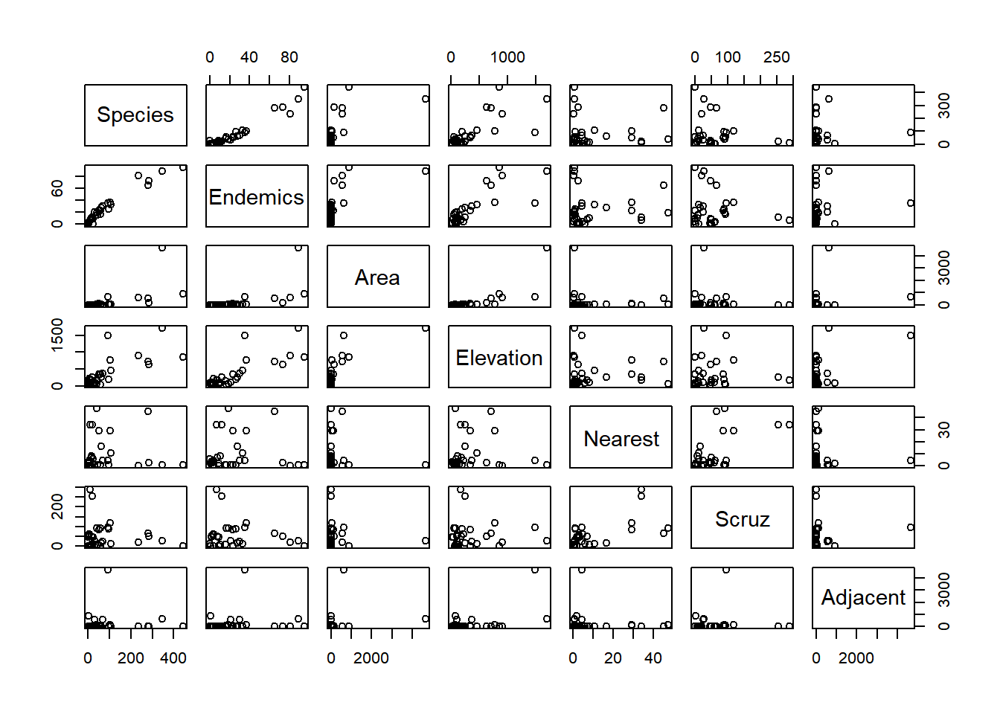

Referencias
5.5 REGRESION
Las islas Galapagos constituyen un archipilago del oceano Pacifico ubicado a 972 km de la costa de Ecuador. Está conformado por trece islas grandes con una superficie mayor a 10 km^2, seis islas medianas con una superficie de 1 km a 10 km^2 y otros 215 islotes de tamaño pequeño. En la base de datos "gala" se encuentran la informacion de 30 islas e islotes de Galapagos y 7 variables en el conjunto de datos. Para el desarrollo de este punto: install.packages(“faraway”)
library(faraway)
## Warning: package 'faraway' was built under R version 4.0.2Cargar el data frame. gala
## Species Endemics Area Elevation Nearest Scruz Adjacent
## Baltra 58 23 25.09 346 0.6 0.6 1.84
## Bartolome 31 21 1.24 109 0.6 26.3 572.33
## Caldwell 3 3 0.21 114 2.8 58.7 0.78
## Champion 25 9 0.10 46 1.9 47.4 0.18###Descripción
Species: a cantidad de especies de plantas encontradas en la isla
Endemics: distribucion de especies que se encuentran confinados a un contorno geografico reducido, y que no se hallan de forma natural en ninguna otra region del mundo.
Atrea: el área de la isla (\(km^2\))
Elevation: la elevacion mas alta de la isla (m)
Nearest:la distancia desde la isla mas cercana (km)
Scruz: la distancia desde la isla de Santa Cruz (km)
Adyacent: el ?rea de la isla adyacente (km cuadrado)
Cuál variable tiene una correlación más significativa con la variable especies?

5.5.1 Correlacion
¿Que tipo de pruebas debe realizar, antes de evaluar la correlación?
Teniendo en cuenta la correlación entre las variables especies y elevation, considera que es significativa?
## Species Endemics Area Elevation Nearest Scruz
## Species 1.00000000 0.95434807 0.8764471 0.75659444 -0.04169456 0.01658504
## Endemics 0.95434807 1.00000000 0.9239845 0.81460057 -0.04124404 0.04518642
## Area 0.87644710 0.92398447 1.0000000 0.89731895 0.10575007 0.21272808
## Elevation 0.75659444 0.81460057 0.8973190 1.00000000 0.10428984 0.09567249
## Nearest -0.04169456 -0.04124404 0.1057501 0.10428984 1.00000000 0.58558128
## Scruz 0.01658504 0.04518642 0.2127281 0.09567249 0.58558128 1.00000000
## Adjacent 0.07789170 0.16746523 0.1869014 0.09956573 -0.09950916 0.12430393
## Adjacent
## Species 0.07789170
## Endemics 0.16746523
## Area 0.18690143
## Elevation 0.09956573
## Nearest -0.09950916
## Scruz 0.12430393
## Adjacent 1.00000000Analice,interpreta y comente la correlación entre especies y las otras variables
Plantee las pruebas de hipotesis y ejecutelas en R para probar la significancia de la correlación de las variables explicativas con la variable dependiente: Especies
5.5.2 Modelamiento lineal
Teniendo en cuenta, el conjunto de variables que podemos decir de las variables explicativas, segun la prueba F
attach(galapagos)
modelo_completo<- lm(galapagos$Species~ galapagos$Area+galapagos$Elevation+galapagos$Endemics+galapagos$Nearest+galapagos$Scruz+galapagos$Adjacent)
summary(modelo_completo)##
## Call:
## lm(formula = galapagos$Species ~ galapagos$Area + galapagos$Elevation +
## galapagos$Endemics + galapagos$Nearest + galapagos$Scruz +
## galapagos$Adjacent)
##
## Residuals:
## Min 1Q Median 3Q Max
## -68.219 -10.225 1.830 9.557 71.090
##
## Coefficients:
## Estimate Std. Error t value Pr(>|t|)
## (Intercept) -15.337942 9.423550 -1.628 0.117
## galapagos$Area 0.013258 0.011403 1.163 0.257
## galapagos$Elevation -0.047537 0.047596 -0.999 0.328
## galapagos$Endemics 4.393654 0.481203 9.131 4.13e-09 ***
## galapagos$Nearest -0.101460 0.500871 -0.203 0.841
## galapagos$Scruz 0.008256 0.105884 0.078 0.939
## galapagos$Adjacent 0.001811 0.011879 0.152 0.880
## ---
## Signif. codes: 0 '***' 0.001 '**' 0.01 '*' 0.05 '.' 0.1 ' ' 1
##
## Residual standard error: 28.96 on 23 degrees of freedom
## Multiple R-squared: 0.9494, Adjusted R-squared: 0.9362
## F-statistic: 71.88 on 6 and 23 DF, p-value: 9.674e-14Lo anterior permite pensar en un modelo que permita expresar la variable especie en funcion de las variables explicativas por que ?
Por que la única variable significativa es endemicas en el modelo completo?
5.5.3 Modelo1: Regresion Lineal Simple
\(y_i=\beta_{0}+\beta_{1}x_{i}+e_{i}\)
##
## Call:
## lm(formula = galapagos$Species ~ galapagos$Elevation)
##
## Residuals:
## Min 1Q Median 3Q Max
## -218.319 -30.721 -14.690 4.634 259.180
##
## Coefficients:
## Estimate Std. Error t value Pr(>|t|)
## (Intercept) 11.33511 19.20529 0.590 0.56
## galapagos$Elevation 0.20079 0.03465 5.795 3.18e-06 ***
## ---
## Signif. codes: 0 '***' 0.001 '**' 0.01 '*' 0.05 '.' 0.1 ' ' 1
##
## Residual standard error: 78.66 on 28 degrees of freedom
## Multiple R-squared: 0.5454, Adjusted R-squared: 0.5291
## F-statistic: 33.59 on 1 and 28 DF, p-value: 3.177e-065.6 Ejercicio:
- Escriba el modelo
- Interprete la pendiente y el intercepto
- Es significativa la variable elevacion por que?
- Cuánto de la variable elevación aporta a la explicación de elevación.
- Realice un grafico donde se muestre el ajuste del modelo 1
f.Verifique si los residuos del modelo 1 cumplen con las condiciones para que el modelo sea valido
Verifique un segundo modelo2 utilizando las variables elevacion y área y compararlo con los modelos anteriores.
Analice las condiciones del modelo multiple
Corra el modelo propuesto por los autores y verifique sus resultados. Qué transformación se realizo y porque?